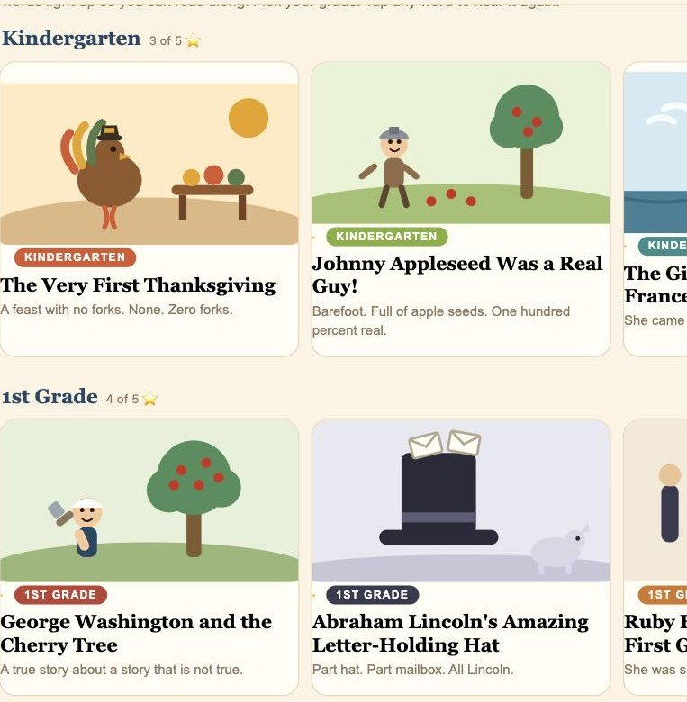
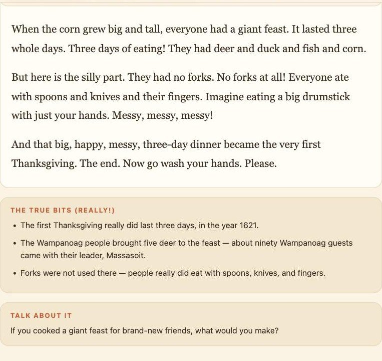
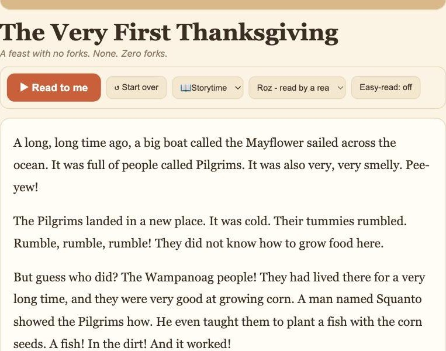

History, But Hysterical
A kid who is learning to read has to do two hard things at once. They have to turn the marks on the page into sounds, and they have to hold on to what the sounds mean. Most kids can do either one. Doing both at the same time is where reading falls apart, and it is why so many children who can technically read still hate it.
The old fix is an adult sitting next to them, reading out loud, finger under the line. That works. It also requires an adult with twenty free minutes, which is a thing families run out of before they run out of anything else.
ESPOhystory — hysterical history — is my answer to that, and it is one of my favorites of everything we have built. Thirty-five true stories out of real history, told for laughs, grouped into seven grade levels from kindergarten through sixth. Five stories in each grade. It reads them out loud in a kind teacher voice while every word lights up as it is spoken, so the child's eye is pulled along the line by the sound instead of pushed along it by effort.

Pick a grade. Pick a story. The stars keep track of what has been read.
Press play. This is the actual app audio.
These are not samples made for a blog post. Each one below is the same recording and the same word-timing file the app itself plays, served off the same address. Press play and read along, exactly the way a kid does. Tap any word to jump the voice to that word.
- The first Thanksgiving really did last three days, in the year 1621.
- The Wampanoag people brought five deer to the feast — about ninety Wampanoag guests came with their leader, Massasoit.
- Forks were not used there — people really did eat with spoons, knives, and fingers.
Kindergarten. One hundred ninety-one words, one minute and twenty-two seconds.
- A writer named Parson Weems made up the cherry tree story in 1806 to help sell his book.
- George Washington really was the first president of the United States.
- His famous teeth were not wooden — his false teeth were made of ivory and metal. Still not comfy.
First grade. My favorite one in the whole app: a made-up story about never making things up.
- Carbonized loaves of bread — scored into eight slices — really were found in Pompeii's ovens.
- The graffiti is real, including 'beware of the dog' mosaics and everyday jokes and notes.
- Pliny the Younger's letters are the first detailed eyewitness account of an eruption; volcanologists still use the term 'Plinian.'
Sixth grade. Four hundred fifteen words, and it still ends on a joke about phone cases.
The joke is in the telling. It is never in the facts.
That is the whole discipline of the thing, and it is the part I would defend in a room full of teachers. A funny history app is easy to write badly — you exaggerate a little, you round a number up, you let a good line survive that is not quite true, and a nine-year-old walks away confidently wrong about something.
So every story ends with a panel called The true bits (really!), and everything in it is checkable. The story about George Washington and the cherry tree is a story about the fact that the cherry tree story never happened — a writer invented it in 1806 to sell books. It is a made-up story about not making things up, and a first grader gets the joke immediately.

Every story ends the same way: what is really true, then something to argue about at the table.
Under that sits Talk about it — one question with no right answer, aimed at the adult in the room as much as the kid. After the Thanksgiving story it asks what you would cook for brand-new friends. After Pompeii it asks why the ordinary stuff — bread, graffiti, a doormat — might teach us more than the palaces do.
It gets harder the way a kid gets older
The grades are not a label on the same story. They are actually different stories, and they climb. The kindergarten Thanksgiving runs one hundred ninety-one words in short, loud sentences with a lot of noises in them. The sixth-grade Julius Caesar runs five hundred eighty-nine words and expects you to follow a man negotiating his own ransom upward because he found the asking price insulting.
Three speeds, big type, and any word on demand

The controls, in the order a kid actually needs them.
The speed control says Cozy, Storytime and Zippy, because those are words a six-year-old can choose between and "0.8×" is not. Easy-read pushes the type up and opens the lines out for anyone who needs the letters to stop crowding each other. And any word, tapped, is spoken on its own — no menu, no dictionary, just the word again in the same voice that just said it, which is what a child actually wants when they get stuck.
The voice
The app shipped reading in whatever voice your device happened to have. On a Mac that is Samantha. On other machines it is worse. It works, and it is flat, and a flat voice is a bad teacher for a kid who is deciding this week whether reading is a chore.
Roz reads it now. She sits at the top of the voice list, above every robot the device offers, and her read is rendered ahead of time and stored with the story — so it starts instantly, it costs nothing to play, it works with the plane's wifi turned off, and it carries real per-word timings, which is what lets the highlight land on the exact word she is saying instead of guessing from an average.
If the recording ever fails to open, the app drops down to the device voice rather than leaving a child staring at a silent page. That is the right order of failure and it is deliberate.
It is free, and it is live
No account, no download, no app store. It opens in a browser and it can be saved to a home screen like anything else. Thirty-five stories are in it today and it gets more, because my kids keep asking for them.
More stories, and the same read-along treatment moving across the rest of the learning shelf.